Handling Date,Time and Datetime.
Create three current variable.
First current variable is timeVar and type is time. format
is "hh:mm AM or PM"
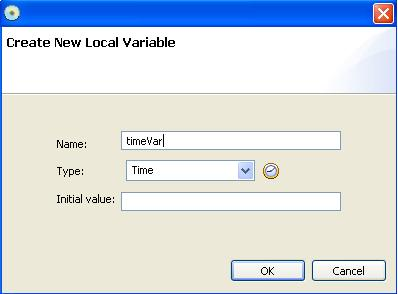
Second current variable is dateVar and type is date. date format is
"mm/dd/yy"
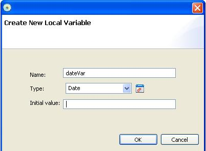
Third current variable is dateTime and type is datetime. Datetime
format is "mm/dd/yy hh:mm AM or PM"
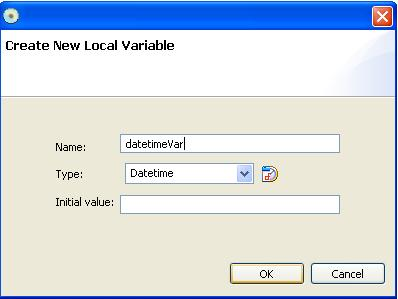
Initial values are set when they are created.
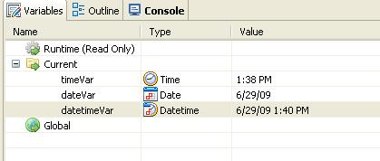
Let's assign some values to these variables. addn assignment step.
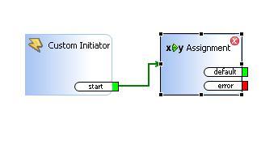
We are assigning datetime value to datetimeVar. Double clicking
assignement brings up ActionStep dialog.
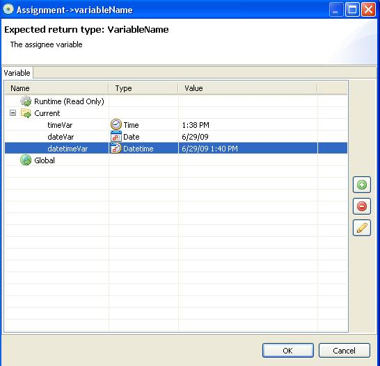
datetimeVar is selected as a variable to which we will assign value.
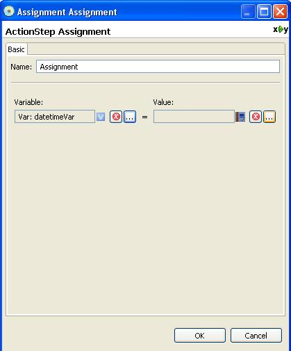
To assign value, we use special safi function called now( ). This will
return current datetiem value.
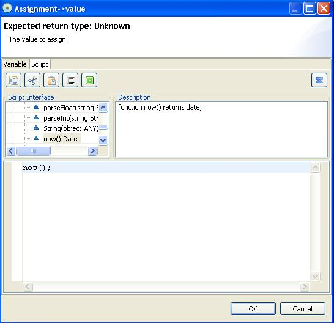
Now, assignment step is set to assign value returned by now() function
to datetimeVar.
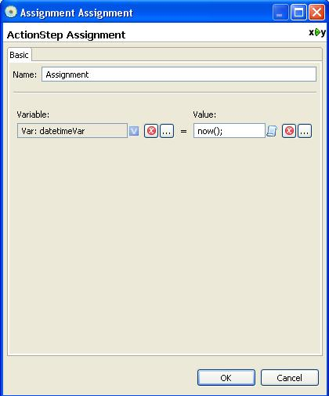
add additional assignment step.
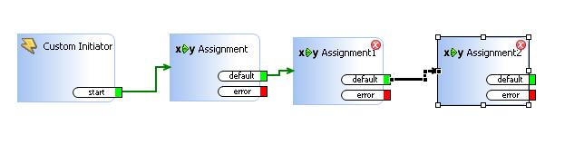
we set now() returned value to dateVar also.
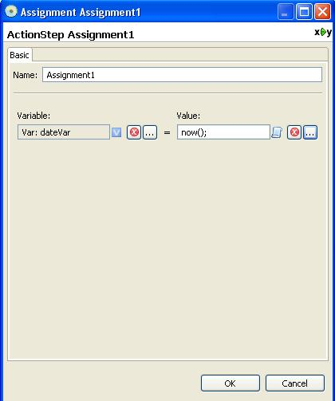
We set now() returned value to timeVar also.
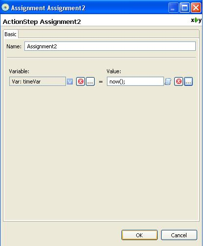
Now, saflet is set for testing. We renamed assignement step to reflect
its operation. This will not affect actual assignment operation.
You can always name actionstep to reflect actual operation.
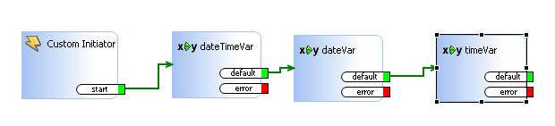
In order to be clear, we will change default value to 5/29/09 for
dateVar.
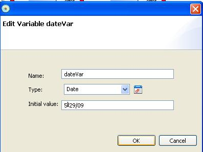
and change inital value of datetiemVar to be 5/29/09 1:40 PM.
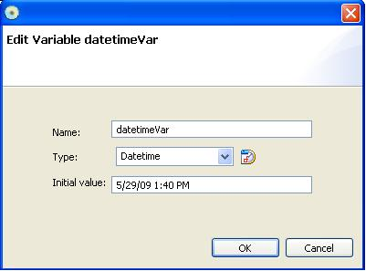
Now, we are ready for testing saflet. Initial value of current
variables are displayed in Variables view.
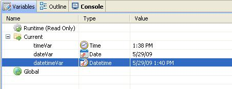
We are starting to debug saflet.
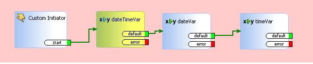
After execution of dateTimeVar assignement actionstep,
datetimeVar is changed to current datetime as you can see in Variables
view.
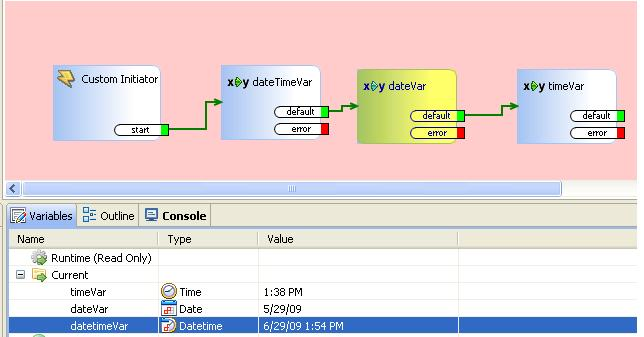
After execution of dateVar, dateVar variable is set to current date.
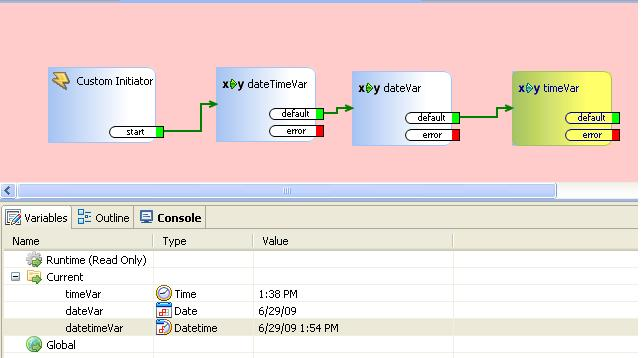
After execution of timeVar actionstep, time is set to current time.

There is other ways to set datetime in script. You can assign string
value. Format should be appropriate to work correctly.
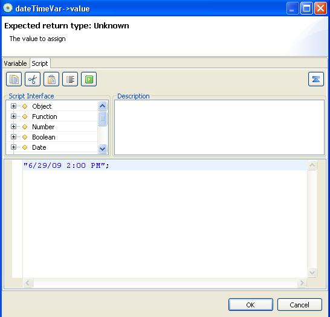
As you can see, you can assign formatted string literal value to
datetimeVar.

This applies to Date type also. You can use formatted string to assign
a date value to date variable.
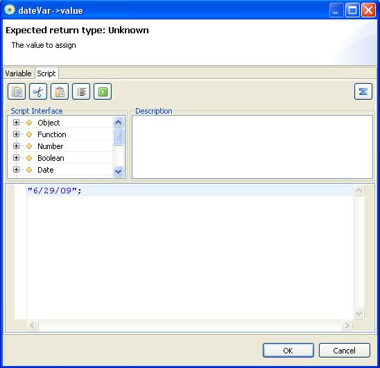
Also, we can assign formatted time string to time variable.
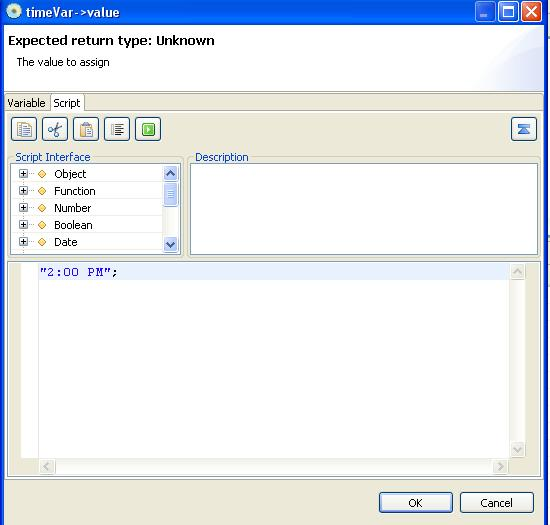
When you debug, dateTimeVar variable is set to specified date time
value after execution of dateTimeVar assignment action step.
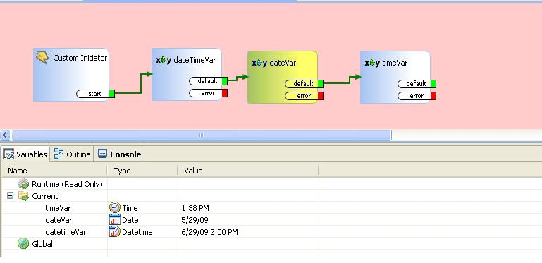
After execution of dateVar actionstep, date is set to assigned value in
script.
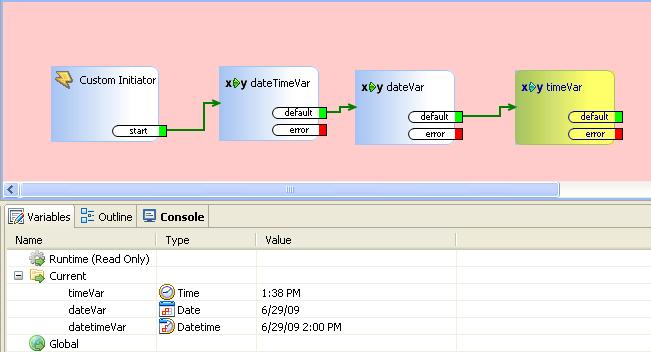
After execution of timeVar actionstep, time is set to assigned value in
script.
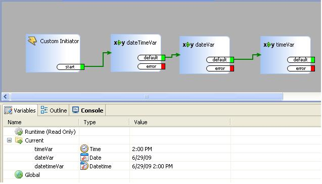